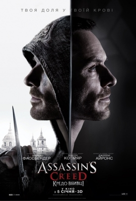

Assassin's Creed (серія)
Матеріал з Вікіпедії — вільної енциклопедії.
Assassin's Creed (укр. Кредо асасина) — серія мультиплатформових відеоігор жанру пригодницького бойовика, які видає французька компанія Ubisoft. На іграх базується однойменна медіафраншиза, що включає побічні ігри, фільми та літературу.
Сюжет ігор Assassin's Creed зосереджений на криптоісторії, згідно з якою головні історичні події зумовлені протистоянням двох таємних товариств: вільнодумних асасинів і авторитарних тамплієрів.
Основні ігри серії були розроблені Ubisoft Montreal для одноосібного режиму гри та Ubisoft Annecy для багатокористувацького, тоді як розробкою ігор для мобільних платформ займались Gameloft i Gryptonite Games.
Серію добре прийняла публіка і критики. Станом на 2020 рік продано 155 мільйонів копій, що зробило її найуспішнішою серією Ubisoft та найпродаванішою серією відеоігор загалом[1].
Зміст
Назва
Історичні асасини — це воїни-смертники мусульманської секти ісмаїлітів, яких готували для вбивства важливих осіб під час хрестових походів. У широкому сучасному значенні асасини — це вбивці відомих людей загалом[2][3].
Назва серії відсилає до кредо вигаданого криптоісторичного ордена асасинів:
- «Утримуй свій клинок від плоті невинних» (англ. Stay your blade from the flesh of an innocent);
- «Ховайся на видноколі, будь єдиний з натовпом» (англ. Hide in plain sight, be one with the crowd);
- «Ніколи не наражай Братство на небезпеку» (англ. Never compromise the Brotherhood)[4].
Також воно формулюється як «Ніщо не істинне, все дозволено» (англ. Nothing is true, everything is permitted). В першій грі серії повний текст такий:
- Коли інші люди сліпо слідують істині, пам'ятай, ніщо не істинне (англ. Where other men blindly follow the truth, remember, Nothing is true).
- Коли інші люди обмежені мораллю чи законом, пам'ятай, усе дозволено (англ. Where other men are limited by morality or law, remember, Everything is permitted).
- Ми працюємо в темряві аби служити світлу. Ми асасини (англ. We work in the dark to serve the light. We are Assassins)[5].
Первісно скорочений варіант — це цитата англійською мовою з книги Вільяма Барроуза «Хвилини, щоб піти»
(англ. Minutes to Go), написаної в 1968 році, де вона приписується магістру асасинів. В романі «Аламут»
(1938) Владіміра Бартола є подібна цитата асасинів «Ніщо не є цілковита реальність, усе дозволено» (в
англійському перекладі англ. Nothing is an absolute reality, all is permitted). Але вперше її наводив
німецькою Фрідріх Ніцше в «Походженні моралі» (1887), де стверджував, що лідери асасинів, які боролися з
хрестоносцями, керувалися правилом «Ніщо не правда, все дозволено» (нім. Nichts ist wahr, Alles ist
erlaubt). Іноді вважається, що витоки цього вислову лежать у «Братах Карамазових» (1880) Федора
Достоєвського, де говориться, що якби люди перестали вірити в Бога як зовнішнє джерело моралі, то їм «все
буде дозволено»[6][7][8].
Cенс цього кредо пояснюється так: сприйняття людини обмежене, тому вона не здатна цілковито осягнути істини;
позаяк людина не може знати абсолютних правил, навіть якщо вони існують, то може робити все, проте повинна
бути готова відповідати за свої вчинки[5].
Тематика
Сюжет ігор серії переважно обертається навколо протистояння двох древніх товариств: асасинів і тамплієрів. Обидва з давніх часів шукають Частки Едему — предмети створені прадавньою зниклою цивілізацією ісу. В сучасності вони, за допомогою досягнень науки і техніки, сподіваються відтворити за генетичною пам'яттю обраних людей події минулого і місцезнаходження Часток Едему.
Головний герой перших п'яти ігор основної серії — сучасний асасин Дезмонд Майлс. Він, за допомогою машини, яка зчитує пам'ять пращурів з ДНК — Анімуса, переживає симуляцію подій далекого минулого. Його мета — дізнатися, де його пращури сховали Частки Едему й отримати їх раніше за тамплієрів. Згодом його метою став порятунок світу від катаклізму, передбаченого зниклою цивілізацією, що він і зробив, пожертвувавши власним життям. В Assassin's Creed IV: Black Flag протагоністом виступає безіменний асасин, що працює під прикриттям в тамплієрській організації «Абстерґо Індастріз» як аналітик, і за допомогою Анімуса дізнається подробиці з життя предка Дезмонда — пірата Едварда Кенвея. Супутні ігри вводять нових персонажів, які мають стосунок до протистояння асасинів з тамплієрами в різних епохах. Останні гри протагоністкою є Лейла Гассан.
Ігровий процес
Більшість ігор основної серії Assassin's Creed належать до жанру пригодницького бойовика з елементами стелсу. Assassin's Creed Odyssey і Valhalla визначаються розробниками як рольові бойовики[9]. Гравцям належить керувати персонажами, котрі для просування сюжетом повинні виконувати отримані завдання на кшталт убити ворожу персону, викрасти цінний предмет чи дістати певні відомості. Для цього потрібно боротися з ворогами, здійснювати розвідку та подорожувати ігровим світом, що може бути представлений як єдиним містом з околицями (як у Assassin's Creed II), так і багатьма територіями, що відображають цілу країну (як у Assassin's Creed Origins і Odyssey в)[9][10].
Дія більшості ігор обрамлена як реконструкція в сучасності (на момент виходу гри чи в недалекому майбутньому) подій минулого. Зазвичай у сучасності якась людина через власну генетичну пам'ять за допомогою спеціальної машини бачить що відбувалося з її предками. Реконструкція минулого допомагає в сучасності знайти якусь цінну річ або іншим чином допомогти персонажам. У сюжеті робиться акцент, що це саме реконструкція, а не достовірне відтворення. Тому в зображенні минулого можливі неточності, що пояснює ігрові умовності, а гравцям дозволено вчиняти на свій розсуд. Так, деякі завдання можливо виконати різними шляхами. Рівень здоров'я персонажів минулого замінює рівень синхронізації з персонажами сучасності — якщо діяти відповідно до історичних умов, він високий; якщо вчиняти невідповідно (наприклад, убивати невинних чи зазнати поранення), рівень синхронізації зменшується і коли падає до нуля, гра починається заново з останньої правдоподібної симуляції[9][11][12]. В багатьох іграх серії є колекційні предмети, знаходження яких вимагає уважності та вправності, а винагороджується значками досягнень або доповненням сюжету[9].
Упродовж гри можливе керування кількома протагоністами: минулого та сучасності. В Syndicate в минулому пропонується регулярно перемикатися між двома протагоністами, в Origins таке перемикання відбувається лише в декількох місіях, а в Odyssey надається вибір на початку: грати за чоловіка чи жінку[9]. В Valhalla можна перемикатися між чоловічим і жіночим персонажами, котрі водночас є тією самою людиною, інформація про стать якої не збереглася[13]. Протагоністи минулого зазвичай змінюються від гри до гри, адже кожна подає іншу епоху. Виняток складають Альтаїр ібн Ла-Ахад і Еціо Аудіторе да Фіренце, що з'являлися особисто чи в спогадах у низці ігор. У сучасності протагоністом перших 5-и частин виступає Дезмонд Майлз. Потім протагоністами постають безіменні персонажі, а в Assassin's Creed Origins, Odyssey і Valhalla це Лейла Гассан[14][15][16].
Історичні протагоністи належать або до асасинів, або до тамплієрів, і в виконанні завдань покладаються на бойові вміння та паркур. Персонажам доводиться активно видиратися по стінах, вилазити на вежі, щоб оглянути місцевість, перестрибувати перешкоди задля швидкої втечі або атаки[17]. В іграх до Assassin's Creed Origins на місцевості є точки огляду, яких треба досягнути, щоб побачити відмітки про нові завдання, або відкрити доступ в іншу локацію. З Assassin's Creed IV Black Flag додано точки, між якими можна миттєво переміщуватися аби заощадити час. У деяких місцях можна виконати «стрибок віри» — це стрибок з великої висоти, що попри гадану самовбивчість закінчується в копиці сіна чи у воді[18].
Персонажі можуть рухатися як пішки, так і верхи на конях, у каретах чи на колісницях (залежно від епохи). В Assassin's Creed III, IV Black Flag, Rogue, Odyssey та Origins пропонується керувати кораблем і брати участь в морських боях. Лише в першій Assassin's Creed протагоніст не вміє плавати[9].
В основних іграх до Assassin's Creed Unity існує перелік завдань і взявшись виконувати одне, персонаж повинен закінчити його, щоб отримати наступне. В інших іграх можна взяти на себе кілька завдань одразу, і тільки загибель персонажа є умовою провалу[19].
Зброя історичних персонажів відповідає епосі: мечі, шаблі, луки, пістолі, метальні дротики, димові шашки тощо. Знакова зброя асасинів — прихований клинок, що кріпиться до зап'ястя й дозволяє непомітно убити ціль з одного удару. Цей клинок відсутній тільки в хронологічно першій Odyssey, в часи подій якої асасинів ще не існувало[20][21]. Крім ворогів-людей місцями трапляються агресивні тварини. Вороги можуть користуватися різною зброєю і підлаштовуватися під озброєння протагоніста[22][10].
Починаючи з Assassin's Creed Brotherhood і до IV Black Flag наявний багатокористувацький режим, окремий від сюжету[23]. В Assassin's Creed Unity надається кооперативний режим, розрахований на чотирьох гравців, які спільно виконують завдання[24].
Відеоігри серії:
Основна серія
- Assassin's Creed (2007) — перша гра серії. Події відбуваються паралельно у 2012 та 1191 роках. У першому випадку головним героєм є бармен Дезмонд Майлс, якого викрали вчені корпорації «Абстерґо Індастріз». За допомогою машини під назвою Анімус вони намагаються відновити фрагмент з життя далекого пращура Дезмонда — Альтаїра ібн Ла-Ахада, асасина, який діяв в епоху хрестових походів, аби відновити свою репутацію та завадити тамплієрам захопити Святу Землю.
- Assassin's Creed II (2009) — головним героєм виступає пращур Дезмонда — Еціо Аудіторе да Фіренце, молодий флорентійський аристократ, який протистоїть планам клану Борджіа на підкорення Італії. Події гри відбуваються з 1476 по 1499 рік в Італії епохи Відродження.
- Assassin's Creed: Brotherhood (2010) — події гри відбуваються в кінці XV — на початку XVI століття. Сюжет розгортається безпосередньо після закінчення подій Assassin's Creed II. Головний герой гри — італійський дворянин — асасин Еціо Аудіторе да Фіренце, який продовжує свою боротьбу з орденом тамплієрів і зокрема Папою Римським, у Римі.
- Assassin's Creed: Revelations (2011) — основні події відбуваються у 1511 в Константинополі, де головним героєм знову виступає Еціо Аудіторе да Фіренце. Крім того, гра розповідає про подальше життя Альтаїра і долю ордену асасинів.
- Assassin's Creed III (2012) — події переносяться в Америку часів війни за незалежність та охоплюють період з 1753 по 1783 рік, де головним героєм виступає Конор Кенвей, індіанець-напівкровка, котрий опиняється між двох вогнів: владою США та англійськими військами. Його пригоди дозволяють Дезмонду врятувати світ від катаклізму в 2012 році. Ця гра завершує історію Дезмонда.
- Assassin's Creed IV: Black Flag (2013) — події гри розгортаються в самий розквіт доби піратства: з 1715 по 1722 рік на Карибах, де головним героєм виступає дід Конора — пірат Едвард Кенвей, який у пошуках багатства натрапляє на слід таємничого артефакта й приєднується до асасинів.
- Assassin's Creed Rogue (2014) — гра слугує продовженням Assassin's Creed IV: Black Flag 2013 року, а також містить у собі сюжетні елементи з Assassin's Creed III та Assassin's Creed Unity. Події розгортаються в середині XVIII століття, під час Семирічної війни. Головним героєм виступає тамплієр Шей Патрик Кормак, що покинув асасинів, розчарувавшись у їхніх методах. Ігровий процес багато у чому нагадує Assassin's Creed IV: Black Flag і містить морські бої з вдосконаленою механікою.
- Assassin's Creed Unity (2014) — події розгортаються в Парижі періоду Великої французької революції і розповідають історію тогочасного тамплієра Арно Доріана, несправедливо звинуваченого у вбивстві свого магістра.
- Assassin's Creed Syndicate (2015) — події розгортаються в Лондоні XIX століття — у Вікторіанську епоху, коли близнюки Джейкоб та Іві беруться визволити Лондон з-під влади тамплієрів.
- Assassin's Creed Origins (2017) — події відбуваються в Стародавньому Єгипті епохи правління Клеопатри. Ця частина розповідає історію появи асасинів, заснованих Байєком під час боротьби єгиптян з Птолемеєм XIII.
- Assassin's Creed Odyssey (2018) — події гри відбуваються в епоху Стародавньої Греції під час Пелопоннеської війни. Assassin's Creed Odyssey стала приквелом Assassin's Creed Origins. Гравцеві надається на вибір два головні герої: спартанські найманці, Алексіос та Кассандра, нащадки легендарного царя Леоніда.
- Assassin's Creed Valhalla (2020) — події розгортаються в епоху вікінгів, у IX столітті. Головним героєм гри виступає вікінг на ім'я Ейвор, якого гравець може сприймати чоловіком або жінкою.
- Assassin's Creed Mirage (2023) — події розгортаються в Багдаді, у IX столітті.
Побічні ігри
- Assassin's Creed: Altaïr's Chronicles (2008)
- Assassin's Creed: Bloodlines (2009)
- Assassin's Creed II: Discovery (2009)
- Assassin's Creed: Recollection (2011)
- Assassin's Creed: Multiplayer Rearmed (2011)
- Assassin's Creed III: Liberation (2012)
- Assassin's Creed: Pirates (2013)
- Assassin's Creed Memories (2014)
- Assassin's Creed Identity (2014)
- Assassin’s Creed Chronicles (2015—2016)
Закриті проєкти
- Assassin's Creed: Project Legacy — колишня однокористувацька рольова відеогра для Facebook, вперше представлена Ubisoft під час Digital Day у Сан-Франциско 29 вересня 2010 року[25]. Відеогра була напряму пов'язана з Assassin's Creed: Brotherhood, вихід якої відбувся пізніше восени[26]. Проходячи завдання у Project Legacy гравець відкривав новий вміст у Brotherhood та навпаки, проходячи основну кампанію в Brotherhood мав змогу відкрити 25 додаткових місій в Project Legacy[26][27][28]. Відеогра була прибрана з Facebook 15 травня 2013 року через відсутність оновлень[29].
Скасовані проєкти
- Assassin's Creed: Lost Legacy
Супутня продукція:
Фільми
У 2009 році на відеохостингу YouTube з'явився офіційний короткометражний фільм «Кредо Вбивці: Походження», що розповідає про Джованні Аудіторе — батька Еціо (головного героя серії від II частини до Revelations).
У 2011 році, в Ubisoft і Sony Pictures проходили переговори щодо повнометражного фільму «Assassin's Creed». Sony придбала права на нього. Згодом Ubisoft підтвердила, що фільм буде виконаний в 3D. Ubisoft співпрацювали з 20th Century Fox і New Regency, для створення фільму. Зйомки було заплановано на 2013-й рік, у світовий прокат фільм вийшов 2016 року. В Україні фільм вийшов під назвою «Кредо вбивці» 5 січня 2017 року.
Мультфільми
У 2010 році вийшов короткометражний мультфільм «Assassin's Creed: Ascendance», який розповідає про Чезаре Борджіа. В спеціальному виданні Assassin's Creed: Revelations — Animus Edition було додано мультфільм «Assassin's Creed: Embers».
Література
У листопаді 2010 року вийшов перший з трьох випусків супутнього до ігор коміксу «Assassin's Creed: The Fall», ще два вийшли дещо пізніше. Цей та низка інших були перекладені українською зусиллями фанатів.
Після першої частини гри вийшов графічний роман «Assassin's Creed: Graphic Novel». 13 листопада 2009 було видано роман «Assassin's Creed Vol. 1: Desmond», а потім «Assassin's Creed Vol. 2: Aquilus». Другу частину серії супроводжував «Assassin's Creed: Renaissance». Після «Братства» вийшов роман за мотивами гри — «Assassin's Creed: Brotherhood». У липні 2011 року з'явився роман «Assassin's Creed: The Secret Crusade», за мотивами першої гри, але з продовженням.
Влітку 2011 року анонсовано комікс «Assassin's Creed: The Chain», продовження історії Деніала Кроса та Миколи Орлова. Після «Одкровень» вийшов роман за мотивами гри — «Assassin's Creed: Revelations». У грудні 2012 була видана нова книга «Assassin's Creed: Forsaken» за мотивами 3-ї частини ігрової серії. 31 жовтня 2013 вийшов комікс «Assassin's Creed: Brahman» Брендана Флетчера, дія якого відбувається в Індії XIX століття.
З серпня 2013 японський журнал «Jump» оприлюднив манґу «Assassin's Creed 4: Black Flag».
Популярність
За підрахунками 2019 року, в різні ігри серії Assassin's Creed загалом зіграло 95 млн людей[83]. У 2020 році загальні продажі досягнули 155 мільйонів копій[1]. Assassin's Creed Unity, Assassin's Creed Origins, Assassin's Creed Odyssey продалися накладом понад 10 млн копій[84]. Найвище оцінені Assassin's Creed II, Assassin's Creed Odyssey та Assassin's Creed: Brotherhood[85].
Примітки
- Andreeva, Nellie; Andreeva, Nellie (27 жовтня 2020). ‘Assassin’s Creed’ Live-Action TV Series In Works At Netflix As Part Of Content Deal With Ubisoft. Deadline (амер.). Архів оригіналу за 30 березня 2021. Процитовано 19 лютого 2021.
- Definition of ASSASSIN. www.merriam-webster.com (англ.). Архів оригіналу за 7 грудня 2017. Процитовано 19 лютого 2021.
- Assassinate definition and meaning | Collins English Dictionary. www.collinsdictionary.com (англ.). Архів оригіналу за 27 квітня 2021. Процитовано 19 лютого 2021.
Посилання
Офіційний вебсайт серіїThe Assasin's Creed Wiki